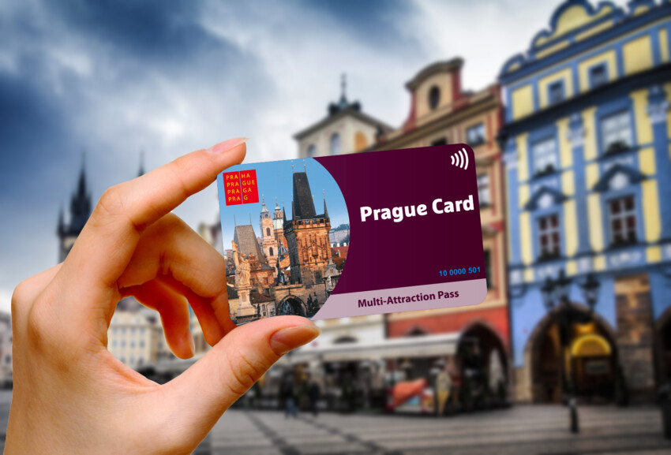

Praga:Posti Da Vedere
- Chiesa San Nicola [4 Euro]
- Torre Panoramica Petrin [6 Euro]
- Casa Danzante
- Fortezza Vysehrad
- Chiesa Santa Maria Tyn
- Cimitero Ebraico Di Praga [14 Euro]
- Josefov [14 Euro]
- Klementinum [12 Euro]
- Malà Strana
- Muro Di John Lennon
- Museo Kafka [11 Euro]
- Orologio Astronomico
- Piazza-San Venceslao e Museo [10 Euro]
- Praga Monastero Strahov
- Ponte Carlo
- Vicolo D'Oro
- Torre Televisione Zizkov [10 Euro]




Conviene